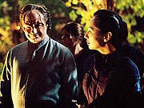
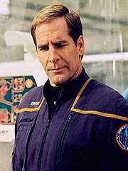
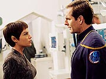
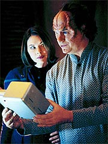
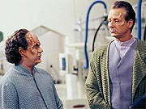
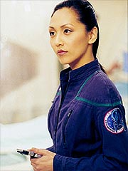
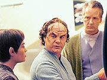
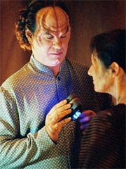

Episódio
anterior | Próximo
episódio
Sinopse:
O doutor Phlox vai à enfermaria
pela manhã para alimentar a diversa fauna que ele cria como fonte
de bioprodutos com potencial medicinal. Logo Hoshi aparece por lá
para entregar uma nova carta que o médico recebera. A oficial de
comunicações está intrigada pelo fato de o doutor receber mais
cartas do que qualquer outro tripulante. Ela pergunta se é algum
"affair" do médico, mas Phlox revela que é apenas a
comunicação vinda de Jeremy Lucas, o médico humano que está em
Denobula Triaxia cumprindo o mesmo programa de intercâmbio que
levou Phlox à Enterprise.

Phlox começa a
redigir uma resposta para Lucas, enquanto segue com seus afazeres
comuns a bordo da Enterprise. Ele trata um homem ferido levemente
na engenharia e até presta uma consulta a Porthos, o cãozinho do
capitão. À noite, ele acompanha a alferes Cutler na sessão de
cinema da nave. Ele não está muito interessado no filme, mas sim
nas reações da tripulação à obra de ficção.
Depois do filme, ele acompanha Cutler até seus aposentos, onde a
alferes demonstra um certo interesse pelo médico. Ainda confuso
pelos sinais de afeição e intenções românticas da humana,
Phlox decide perguntar a T'Pol, que já convive com humanos há
mais tempo, se eles costumam se relacionar intimamente com espécies
alienígenas. A Vulcana sugere que a alferes possa estar apenas
satisfazendo sua curiosidade, o que não ajuda muito o doutor.
Enquanto isso, a Enterprise encontra uma nave pré-dobra nas
imediações de um sistema planetário. Dentro dela, dois
astronautas alienígenas em estágio avançado de uma doença.
Archer ordena que eles sejam trazidos a bordo, e Phlox é
convocado a examiná-los.

Ao
serem tratados e reacordados, eles dizem a Archer que vêm do
planeta próximo, Valakis, onde grande parte de sua população
está sofrendo do mesmo mal. Archer leva a Enterprise até lá, na
esperança de ajudar aquela civilização. Chegando lá, Archer
convoca T'Pol, Phlox e Hoshi Sato para acompanhá-lo à superfície.
Os Valaquianos são muito cooperativos e fornecem a Phlox todas as
informações que ele pede, na tentativa de encontrar uma cura
para a doença. Ao tentar se comunicar com um funcionário do
hospital, Hoshi descobre que ele é de outra espécie, os Menks,
que se desenvolveu e convive pacificamente com os Valaquianos em
Valakis. O diretor do centro médico, Esaak, conta a Phlox que
esses "parentes" evolutivos dos Valaquianos são imunes
à doença, o que faz com que o doutor requisite dados sobre os
Menks também.
Em razão disso, o Menk que trabalha no hospital, Larr, leva os
tripulantes da Enterprise até uma reserva Menk, onde seus iguais
vivem em harmonia com a natureza, em uma civilização primitiva,
similar à de povos indígenas da América do Sul. Lá Phlox faz
leituras biomoleculares dos Menks, auxiliado por Hoshi Sato e pela
alferes Cutler, que ele convocou especialmente para essa missão.

Aproveitando uma
deixa, o doutor resolve investigar mais sobre o interesse de
Cutler por ele, revelando que tem três esposas em Denobula
Triaxia, seu planeta natal, e que percebeu que a alferes pode
estar querendo ter um relacionamento íntimo com ele. Cutler
responde que realmente está interessada, mas que não tem
interesse em se tornar a "esposa número quatro". Ela
sugere que os dois permaneçam amigos e apenas "vejam aonde
isso vai". Phlox aceita a proposta de bom grado.
De volta à Enterprise, Phlox começa a estudar os dados que
coletou, e descobre que a "doença" dos Valaquianos na
verdade é uma falha genética que tem se formado em seu genoma
durante os últimos milhares de anos, tendo se acelerado nos últimos
tempos. Ele projeta que a espécie esteja extinta em mais dois séculos.

Archer
o pressiona para encontrar uma cura, mas o médico está
reticente. Ele não quer interferir na evolução dessa sociedade,
principalmente levando em conta que os Menks têm o potencial de
se tornar a principal raça do planeta, caso os Valaquianos venham
realmente a sumir do mapa. Em princípio o capitão discorda de
Phlox, ordenando-o a obter a cura para os Valaquianos. Phlox o
faz, mas no fim o capitão conclui que não pode "brincar de
Deus" e interferir na evolução daquela sociedade.
A Enterprise parte, deixando apenas medicamentos para reduzir o
avanço da doença, mas abandona os Valaquianos à própria sorte.
E Phlox conclui sua carta ao doutor Lucas, relatando seu recente
dilema ético, e convida Cutler para um lanchinho no refeitório.
Comentários:
"Dear Doctor" é um episódio corajoso.
Ele não só coloca a tripulação da Enterprise em um tremendo
dilema ético, mas soluciona esse dilema de um modo que poderia
muito bem deixar Archer e cia. na condição de vilões da história.
Um movimento audacioso, sem dúvida.
O grande destaque do episódio é, obviamente, o doutor Phlox.
Desenvolvido nessa veia, o médico da Enterprise não corre risco
algum de se tornar uma versão do Neelix para o século 22. Seu
personagem passa por grande evolução (com o perdão da expressão)
ao longo dos 45 minutos, tanto no plano pessoal como no
profissional.

O potencial do
personagem é desenvolvido não só com novos elementos, mas
principalmente com o resgate de antigos. Em "Broken
Bow", Phlox é apresentado à audiência como um
doutor pouco convencional, quase um cientista louco, com várias
aberrações e criaturas em sua enfermaria. Dali em diante esse
aspecto de sua natureza profissional havia sido totalmente excluído
--Phlox parecia um médico padrão, sem qualquer resquício de seu
"estilo" diferenciado.
Esses elementos são resgatados logo no início do episódio,
quando Phlox não só alimenta todas as criaturas que ele abriga
em sua enfermaria, como também come uma lesma que originalmente
daria a um dos animais! Belo toque para lembrar a audiência de
que aquele não era um médico qualquer, e não se pautava pelos
mesmos padrões de comportamento que os humanos.
O contexto criado ao longo do episódio procura enfatizar isso --Phlox
não é humano, nem vive como um. Os recursos não partem apenas
da prática médica, mas do lado pessoal do médico. O seu caso
romântico com Cutler serve muito bem a esse propósito. Ele até
enfatiza à alferes que "sua cultura é diferente", o
que deixa o recado bem claro.

Toda
essa preparação é feita para gerar o conflito entre Phlox e
Archer, quando o primeiro define suas ações por uma ética
diferente da humana, baseada muito mais na compaixão do que nas
grandes consequências de seus atos. Até aí, o desenvolvimento
do roteiro é perfeito. Até Archer começa a entender um pouco
mais a lógica dos Vulcanos e seu comportamento com os humanos,
depois de se ver na mesma situação, tendo de negar a tecnologia
de propulsão de dobra aos Valaquianos.
O único problema ocorre no ponto em que os executivos da
Paramount resolveram interferir com a história. Em vez de deixar
Phlox desobedecer às ordens de seu capitão, em favor de sua ética
própria, o estúdio achou que isso enfraqueceria Archer enquanto
personagem e pediu que os produtores fizessem com que Phlox agisse
com a anuência do capitão.
O resultado não foi muito penoso para Phlox, que manteve sua coerência
de raciocínio e sua personalidade intactas. Mas colocou Archer em
maus lençóis. Não que a decisão que ele tomou, de deixar os
Valaquianos resolverem seus problemas sozinhos para não
interferir no desenvolvimento natural das civilizações daquele
planeta, tenha sido intrinsecamente errada. Mas não parecia a
coisa certa a fazer.

Na verdade,
discutir se Archer deveria ou não ter fornecido a cura aos
Valaquianos é como discutir o sexo dos anjos. Há argumentos a
favor e contra, mas nenhum deles é definitivo. Em favor da
interferência poderia-se dizer que milhões de vida (e
possivelmente uma espécie inteira) não devem ser sacrificadas
por uma hipótese. Por outro lado, é possível dizer que não são
os humanos quem devem julgar como o futuro deve se desenvolver
para outras civilizações.
Surge aqui uma situação que pode ter muito bem levado à
Primeira Diretriz. Archer até faz uma menção clara (e até
exagerada) a isso em seu discurso, quando resolve que seu médico
está com a razão. Mas que essa não seria a coisa humana a fazer
--principalmente partindo de um capitão que deveria ser mais
impetuoso e inexperiente que Kirk e que não está limitada por
uma regra explícita da Frota Estelar como a Primeira Diretriz-- não
é difícil de perceber.
Pessoalmente, eu estaria mais confortável se Archer e Phlox
mantivessem ambos suas posições. Além de gerar mais conflito
entre os personagens, que poderia oferecer desenvolvimentos
dramaticamente interessantes para a série, seria mais coerente
com o que conhecemos dos dois personagens. Em última análise, em
sua versão original, "Dear Doctor" faria por
Phlox o que "The Enemy" fez por Worf em A Nova
Geração (na ocasião, Worf deixa um Romulano morrer, apesar
de seus colegas na Enterprise insistirem para que ele o salve).
Do jeito que ficou, o episódio não retratou um antagonismo
"ética de Phlox versus ética humana", mas simplesmente
a situação "por pior que possa parecer, Phlox tinha razão
e o capitão, ao final, acabou aceitando isso". O que torna
todo o esforço de mostrar que Phlox é diferente do resto da
tripulação meio manco, em termos de contexto dramático.
Levando tudo isso em conta, o final foi mais conservador do que
poderia ter sido --mas ainda assim muito mais polêmico do que a
maioria dos episódios de Jornada nas Estrelas. Não há
final feliz ou solução intermediária aqui. Apenas a torcida
para que a "natureza" seja mais sábia que a moral
humana.

Do
ponto de vista narrativo, o episódio se assemelha muito a outro
segmento de A Nova Geração, "Data's
Day". As interlocuções de Phlox, escrevendo sua
resposta ao doutor Lucas, dão bem esse tom, o que funciona
maravilhosamente não só para o propósito do episódio
--desenvolver Phlox--, como também para dar texturas adicionais
à vida cotidiana a bordo da Enterprise. Uma boa opção, sem dúvida.
John Billingsley apresenta uma atuação maravilhosa de Phlox,
muito emotiva e vibrante. Suas cenas com Scott Bakula em especial
produzem excelentes sequências. Ele divide com a audiência toda
a angústia de Phlox por seu dilema ético, em todos os momentos
do episódio. Não seria exagero dizer mais da metade do carisma
de Phlox vem do próprio Billingsley, e não do roteiro.
Em termos de direção, temos algumas tomadas inovadoras da ponte,
como a sequência em que a Enterprise encontra a nave Valaquiana.
É o tipo de diferencial que dá uma vida nova aos cenários.
Novas tomadas externas da Enterprise também ajudam nesse sentido.
Tecnicamente, o único ponto fraco talvez seja a maquiagem
Valaquiana/Menk. Foi um acerto fazer as duas espécies bastante
semelhantes (já que a proposta era criar um paralelo da relação
Homo sapiens/neandertal), mas o visual como um todo ficou simples
demais --as velhas testas enrugadas da semana que às vezes
cansavam a audiência em Voyager.
Apesar disso, "Dear Doctor" se fixa como um episódio
interessante e polêmico. E se uma história é capaz de alimentar
discussões, é sinal de que o tema foi bem escolhido e ao menos
razoavelmente desenvolvido. Mesmo com a interferência do estúdio,
o episódio pode ter boa acolhida entre os fãs.
Citações:
Lucas - "It's
mating season, so you know how that goes. I thought human
reproduction was complicated. You, Denobulans, make us fell like
single-cellular organisms."
("É época do acasalamento, então você imagina como está.
Eu pensei que reprodução humana fosse complicada. Vocês,
Denobulanos, nos fazem nos sentirmos como organismos
unicelulares.")
Phlox - "The captain has commited all our resources to
helping people he didn't even know existed two days ago. Once
again, I'm stroked by your species' desire to help others."
("O capitão usou todos os nossos recursos para ajudar
pessoas que ele nem sabia que existiam dois dias atrás. Uma vez
mais, estou surpreso com o desejo de sua espécie de ajudar
outros.")
T'Pol - "We may look alike, but the similarities end there."
("Podemos nos parecer, mas as similaridades terminam aí.")
Phlox - "On the surface, the Menk appear to be a primitive
species, unsofisticated even by human standards... no offense."
("Na superfície, os Menks parecem ser uma espécie
primitiva, não-sofisticada até por padrões humanos... nada
contra.")
Cutler - "Phlox, as far as your... extended family goes,
I'm not interested in becoming wife number four. I just want to be
your friend."
("Phlox, até onde sua... família maior me diz respeito, não
estou interessada em me tornar a esposa número quatro. Só quero
ser sua amiga.")
Phlox - "What do you mean by 'friend'?"
("O que quer dizer com 'amiga'?")
Cutler - "Let's just see where it goes..."
("Vamos só ver até onde vai...")
Archer - "We could... stay and help them."
("Poderíamos... ficar e ajudá-los.")
T'Pol - "The Vulcans stood to help Earth 90 years ago. We're
still there."
("Os Vulcanos ficaram para ajudar a Terra há 90 anos. Ainda
estamos lá.")
Archer - "I never thought I'd say this, but I'm beginning
to understand how the Vulcans must have felt."
("Nunca pensei que diria isso, mas começo a entender como os
Vulcanos devem ter se sentido.")
Phlox - "All I'm saying is that we let nature make her
choice."
("Tudo que estou dizendo é que deixemos a natureza fazer sua
escolha.")
Archer - "To hell with nature. You're a doctor. You have a
moral obligation to help people who are suffering."
("Pro inferno com a natureza. Você é um médico. Você tem
uma obrigação moral de ajudar pessoas que estão
sofrendo.")
Phlox - "Forgive me to saying so, but I believe your
compassion for this people is affecting your judgement."
("Perdoe-me por dizer, mas eu acho que sua compaixão por
essas pessoas está afetando seu julgamento.")
Archer - "My compassion guides my judgement."
("Minha compaixão guia meu julgamento.")
Archer - "I have reconsidered. I spent my whole night
reconsidering. And what I decided goes against all my principles.
Someday, my people will have to come with some sort of a doctrine,
something that tells us what we can and can't do out here, should
do or shouldn't do. But until somebody tells me he drafted that...
directive, I'm going to have to remember myself everyday that we
didn't come out here to play God."
("Eu reconsiderei. Eu passei a noite toda reconsiderando. E o
que decidi vai contra todos os meus princípios. Algum dia, meu
povo terá de vir com algum tipo de doutrina, algo que nos diga o
que podemos e não podemos fazer aqui fora, devíamos e não devíamos
fazer. Mas até que alguém me dia que rascunhou essa... diretriz,
vou ter de me lembrar a cada dia que não viemos aqui para brincar
de Deus.")
Trivia:
 O episódio faz a primeira menção aos Ferengis, raça que
apareceria em Enterprise em "Acquisition",
ainda da primeira temporada.
O episódio faz a primeira menção aos Ferengis, raça que
apareceria em Enterprise em "Acquisition",
ainda da primeira temporada.
É a segunda aparição da alferes Cutler em Enterprise, tendo
sido a primeira em "Strange New World".
A atriz Kellie Waymire já havia aparecido em Jornada antes
da série, interpretando B'Elanna Torres e Seven of Nine na peça
encenada durante o episódio "Muse", de Voyager.
Karl Wiedergott já havia interpretado Ameron, em "Warlord",
de Voyager.
John Billingsley revelou que houve uma mudança no final do episódio,
com relação às primeiras versões do roteiro. "Com o final
que havia sido criado inicialmente, eu estava bem confortável",
disse. "Mas o cabeça do estúdio sugeriu algumas revisões
no final. O que você faz? Eu não fiquei tão feliz com as revisões,
mas não é minha série, você tem que meio que se ajustar, mesmo
se algumas vezes parecer um pouco de contradição em termos do
que seu personagem deveria ser."
Ele conta do que se trata. Na versão original, "nessa crise
de consciência, o doutor essencialmente faz algo que viola suas
obrigações hierárquicas padrão de um tripulante para com seu
capitão", diz Billingsley. "Na verdade, ele toma uma
decisão que está enraizada em 'eu tenho peixes maiores para
fritar', em vez de honrar os desejos de seu capitão. A rede
essencialmente sentiu que não, era importante essencialmente dar
a certeza de que todo mundo estava lá para apoiar as decisões do
capitão. Pessoalmente eu pensei, 'Bem, eu acho que vocês
perderam algo interessante nessa tensão potencial'. Mas isso não
é minha decisão."
Apesar disso, o ator gostou muito de filmar "Dear Doctor",
o primeiro episódio da série a dar um pouco mais de atenção a
Phlox. "Eu me diverti bastante fazendo este episódio",
diz. "Eu acho que foi o primeiro passo que demos a frente na
série em dar ao doutor um alcance maior. Minha preocupação
desde o começo foi de que ele fosse mais do que o cara que está
perpetuamente de bom humor e que todo mundo procuraria para uma
risada. Em termos de dar a ele uma personalidade redonda, eu acho
que 'Dear Doctor' realmente começa a se mover nessa direção.
Ele tem uma crise de consciência, e acho que vocês podem pensar
que ele é alguém que é uma pessoa muito inteligente, com
profundidade e sentimento. Espero que haja outros episódios que
continuem a explorar isso."
Ele também disse que não faltaram piadas na produção do episódio.
"Eu tinha essas narrações acontecendo durante todo o episódio",
explica Billingsley. "Decidimos por gravá-las no palco de
som, e reproduzi-las durante a filmagem, para que pudéssemos
cronometrar quanto tempo certos pedaços de ação física, que
deveriam ser cobertas pela narração, levariam. Então eu
perguntei ao pessoal do som se eles me ajudariam", relata.
"Tínhamos uma cena na ponte, onde minha narração deveria
ser tocada, e deveria ser 'Humanos são incríveis, quão quentes
e magníficos eles são etc. etc. etc.' Então eu os fiz gravar
minha voz dizendo, 'Oh, o capitão é certamente um gatão, que
figura arrojada --fico pensando se ele está usando cuecas. Eu
certamente gostaria de pegá-lo sozinho em um pod algum dia
desses', e eu fui bem longe naquele estilo. Eu pedi a eles que
realmente esperassem por uma tomada, então estava todo mundo bem
concentrado --então aqui saiu! É um grupo de pessoas muito
divertido e gregário", conta Billingsley.
O filme a que a tripulação assiste no episódio é "Por
Quem os Sinos Dobram" ("For Whom the Bell Tolls").
A cena exibida tem Gary Cooper, como Robert Jordan, e Ingrid
Bergman, como Maria.
Ficha
técnica:
Escrito por Maria Jacquemetton
& André Jacquemetton
Direção de James A. Contner
Exibido em 23/01/2002
Produção: 013